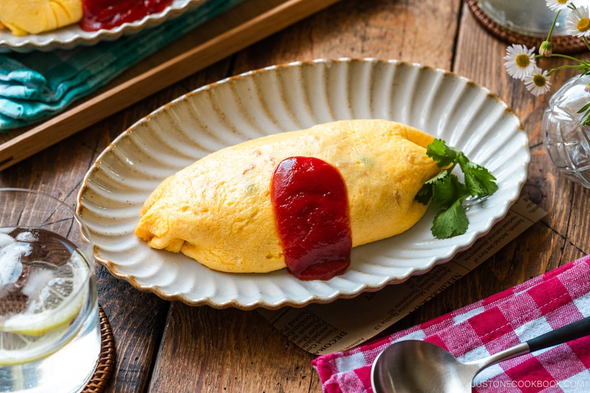

Steak
HOME

omurice, a dish that seems so simple yet can eb considered the pinnacle of an omelette, it is technique personified
, the mastery displayed while making it is impressive. Its difficult is that it similar to a french omelette where
there is no browning, yet is still slightly gooey in the middle to get that nice shape. Yet despite all
this difficulty it is just simply an omelette with some rice
ingredients
- Large eggs
- Cooked Japanese Rice
- chicken thigh
- onion
- green peas
- ketchup
- worcesters sauce
- butter
steps
THE RICE
- Preferably start with frozen leftover rice
- dice onions and portion the chicken out
- add a tbsp of butter and sweat onions out
- then add chicken when onions start to brown
- cook chicken until no longer pink
- add ketchup and 5 tbsp of worcester sauce
- add the leftover rice in small clumps, then salt and add your peas
THE EGGS
- crack two eggs cutting the eggs instead of whisking
- add salt
- add butter to pan the add eggs
- stir eggs in a spiral motion with chopsticks
- stop when eggs are half cooked
- the use the ton ton ton method to create a spiral
- flip on top of your plated rice
- Viola